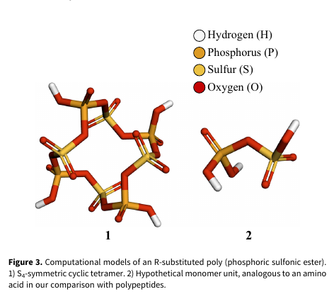
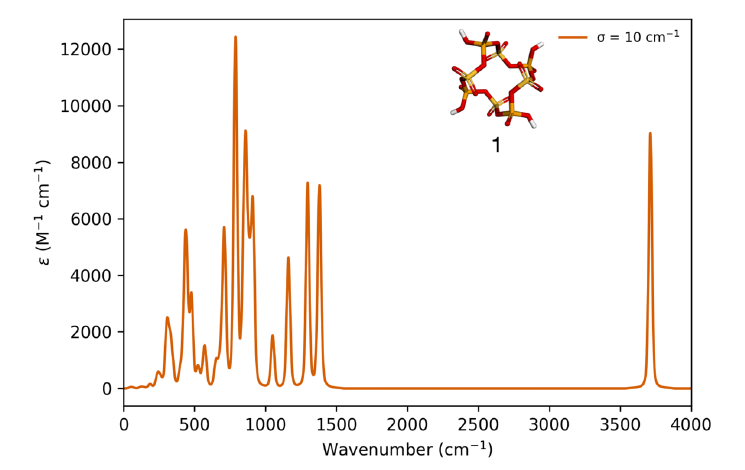
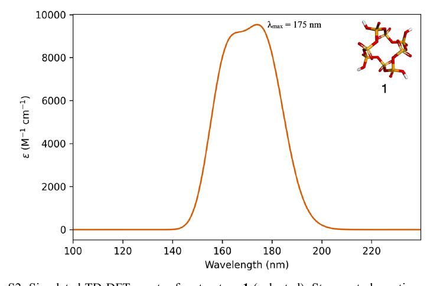

In Venus's clouds, sulfuric acid creates an unfamiliar setting. This research asks whether it could allow phosphorus-sulfur polymers: a speculative idea tested with computational chemistry.
48–70 km altitude Earth-like temperatures and pressures
Mysterious UV absorbers Still not fully explained
Sulfuric acid droplets and clouds Provide a solvent to shape chemistry
The central idea
Venus may offer an environment where unfamiliar chemistry is worth testing.
What this shows
Under a set of modeled Venus-like conditions, some routes to phosphorus-sulfur polymer structures are chemically plausible.
What this does not show
It does not show that these molecules are present on Venus, that they are alive, or that Venus is known to host life.
01 / A different chemical setting
Venus conditions create a setting for a different kind of chemistry.
The surface of Venus is inhospitable. Higher in its cloud decks, at 48 to 70 km altitude, temperatures and pressures are closer to those on Earth. Here, sulfuric-acid clouds and droplets may allow unfamiliar chemistry to occur.
Choose an environment
These three settings make a chemistry question feel very different. This is a conceptual guide.
Water = familiar aqueous chemistry paradigm. Sulfuric acid = unexplored potential for polymeric chemistry.
Water-rich conditions
Forming larger molecules by removing water is often thermodynamically difficult in ordinary aqueous settings.
The paper models sulfuric-acid cloud-like conditions using very low water activity and an implicit solvent approximation. These buttons are an educational abstraction.
For the technically curious: “low water activity”
Water activity is not simply how much water is present. It describes water's effective thermodynamic availability. The paper applies Venus-relevant corrections for a highly concentrated sulfuric-acid environment.
02 / A creative question, tested carefully
What if a polymer did not use carbon as its backbone?
On Earth, many important large molecules have carbon-rich backbones. This study asks whether a repeating structure made from phosphorus, sulfur, and oxygen could be a chemically reasonable alternative in Venus-like clouds.
A polymer is a repeating chain
A polymer is a chain of repeating units. The study models a small ring as a stand-in for a much longer chain, then calculates properties of that model.
Creative does not mean ungrounded. The hypothesis is unusual; the test uses established quantum-chemical methods to ask focused questions about it.

Published Figure 3, cropped for this story: the cyclic polymer model (left) and its monomer-like precursor (right).
Why use a ring to represent a chain?
A finite chain has end groups that complicate comparisons. The paper's S4-symmetric cyclic tetramer avoids end groups and is used as a proxy for longer material, with important limitations noted in the article.
03 / What the calculations support and where they stop
A plausible reaction is only one piece of the puzzle.
The study examines whether selected formation routes are energetically favorable and whether selected bonds look difficult to break. Those results are informative, but they are not a complete simulation of Venus's cloud chemistry.
CalculatedUnknown in Venus
The honest conclusion
“Could it form?” is different from “Does it form?” and very different from “Does it have a biological role?” This page keeps those questions separate.
What this shows: a specific family of phosphorus-sulfur structures is chemically plausible enough to justify more investigation.
What this does not show: their presence, abundance, function, or connection to life.
Numbers behind the headline
The Supplementary Information reports polymer-growth steps of +11, −1, −2, and −1 kcal/mol for the selected cyclic models. It also reports selected solvated bond-cleavage enthalpies from 51 to 191 kcal/mol. These are model-dependent values, not direct estimates of a cloud-droplet lifetime.
Method limits worth knowing
The calculations use DFT with an implicit solvent approximation. They do not model complete reaction networks, explicit solvent organization, aerosol catalysts, or real Venus cloud sampling.
04 / If the chemistry exists, how could we notice it?
Look for a fingerprint and then ask for a second line of evidence.
Molecules vibrate in characteristic ways. The calculations predict infrared vibrations that may help distinguish phosphorus-oxygen-sulfur linkages from some familiar reference compounds. A real detection would need multiple, independent lines of evidence.

Published Supplementary Figure S3, cropped: calculated IR spectrum of the model polymer.
Two especially notable predicted bands
The paper highlights modeled P–O–S-associated stretches near 845 and 861 cm⁻¹. They are candidates for a useful spectral clue, not a guaranteed identification.
845 cm⁻¹861 cm⁻¹Need comparison samplesNeed mass evidence too
Cloud particles, overlapping signals, and the approximations in the calculation could all complicate a real measurement.

Published Supplementary Figure S2, cropped: the modeled polymer absorbs most strongly near 175 nm, rather than in Venus's unknown near-UV absorber region.Why this matters for missions
The paper argues that currently planned Venus missions are generally not optimized to recognize intact, nonvolatile cloud-particle macromolecules. It recommends a tandem approach: vibrational spectroscopy plus appropriately capable mass spectrometry.
About the project
Exciting science questions can be imaginative and still be rigorous in their methodological exploration.
This project was developed in Martin Rahm's group before Ishaan Madan joined through the CASSUM fellowship, later taking the lead on final calculations and the writing of the manuscript.
With gratitude to Martin Rahm for the opportunity, mentorship, and the space to pursue an unconventional question carefully.